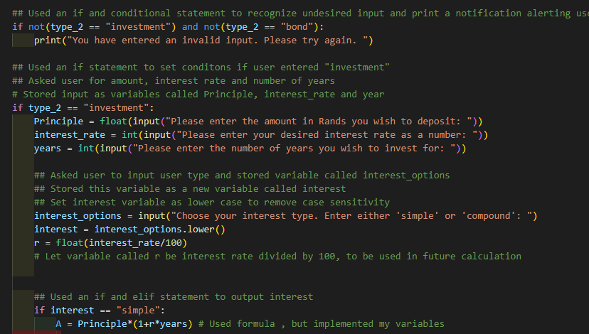
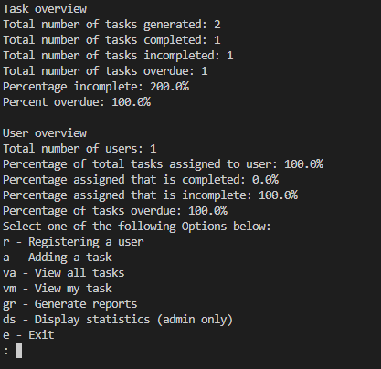
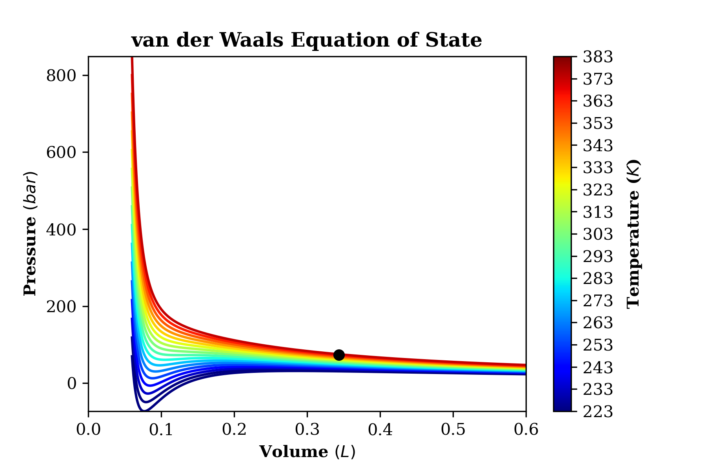
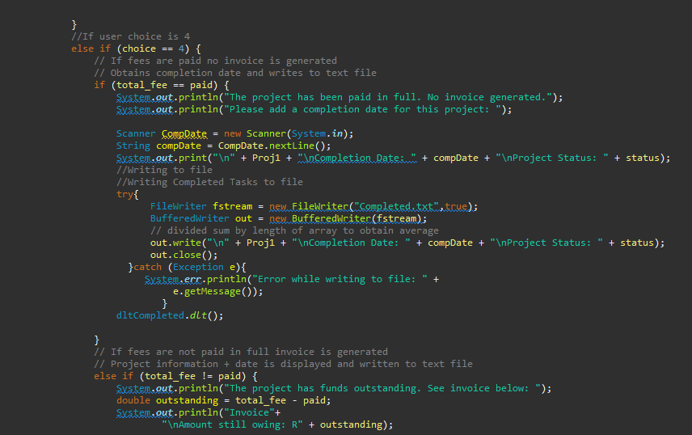
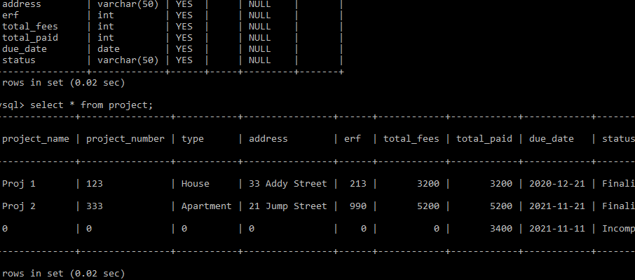

Python Finance Calculator
Designed and created a program which calculated loans and
repayments. The program took a variety of user input such as principle amounts and
periods. The calculator also offered a users with a menu to enhance navigation and UX.
The finance calculator then returned the appropriate results based on user choice and input.
View here

Python Task Manager
Designed and implemented a task manager to assist with tracking
of employees as well as tasks. The program utilized file handling to both store and
present data relating to specific tasks. Factors such as employee names, dates and document numbers
were used as search criterias to find relevant tasks and update, change or remove them. File handling
acted as a database for the task manager data.
View here

Python Chemistry Program
Created a program that dived into the world of chemical engineering. The Python
Chemistry program allowed users to select a specific chemical equation and manipulate data with the equation.
The program functioned as a calculator which implemented both file handling and many math modules such
as numpy and matplot. The user was able to obatin various results from multiple elements and compounds
through an easy to use menu. The program served to eliminate the need to physically workout equations or
plot graphs from said equations. In essence the calculator did the heavy lifting for the user.
View here

Java Project Management System:
The Java project management system used file handling and OOP to manage
tasks of a fictional construction company. The program allowed for user friendly management of both
projects and participants (customers, engineers, architects etc.). The program was able to identify projects based
on specific criterias such as overdue or incomplete ones. File handling acted a database for the various projects.
View here

Java Project Management System with mySQL Database
This program is similar to the previous Java project manager, however
it has been greatly improved. This program utilized a mySQL database to record and represent various projects. The database
implementation allowed for a more robust management and filtration of projects and participants.
View here